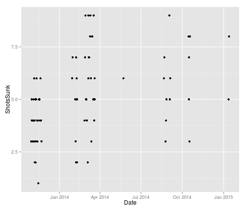

- Basketball is a sport played for fun
- But if you are bad at basketball it can be embarrassing to play with friends
- When will I be good enough to play basketball in public?
Tim F.
Coursera student
Predict when I will be good enough using a model fitted to historical data.
Luckily I have built up a small record of my basketball accuracy over time. Each data point shows how many shots I sunk (out of ten), a fixed distance from the hoop. There are 79 recorded attempts.  This data can be used to predict when I will be good at basketball!
Please go here to view my app: https://tim-fan.shinyapps.io/basketball-accuracy
The app will allow you to
Extras:
Source for the shiny app:
Source for this presentation: